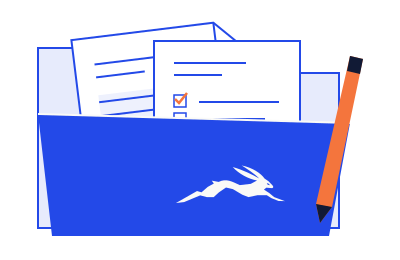

LIEBRE LAW
LIEBRE LAWSolicitudes ante USCIS
¿Va a presentar una solicitud a USCIS?
Antes del formulario, confirme qué necesita pedir.
El trámite, la tarifa y las pruebas dependen de su categoría.
Lo esencial
- Cada trámite tiene su formulario y su tarifa. Revise la versión vigente en uscis.gov antes de enviar; un formulario viejo se rechaza.
- Guarde el recibo (I-797) y siga el estado en línea con el número de recibo.
- Si llega una carta pidiendo pruebas, responda completo y antes de la fecha (84 días como máximo). Una respuesta a medias es una negación.
¿Qué necesita hacer ahora?
1Elegir el trámite
Una petición familiar, la residencia, un permiso de trabajo y la ciudadanía son trámites distintos. Revise su objetivo e historial antes de escoger el formulario. USCIS, los consulados y la corte tienen funciones diferentes.
Siguiente paso →2Preparar y presentar
Use la edición aceptada del formulario y sus instrucciones actuales. Compruebe documentos, traducciones, firmas, pago y dirección o presentación en línea. Conserve una copia completa y la prueba de envío. No todas las solicitudes pueden presentarse por internet.
Siguiente paso →3Seguir las notificaciones
El recibo identifica el caso; no es una aprobación. USCIS puede pedir biometría, una entrevista o más pruebas. Lea cada aviso y cumpla su plazo. Si llega una decisión, revise qué concede o niega y si exige otro paso.
Qué tener a mano →El recorrido depende del caso. Presentar una solicitud no garantiza su aprobación.
¿Y en mi situación?
¿Cuánto tarda?
Depende del formulario, la categoría y la oficina. Consulte la herramienta oficial con su recibo. El tiempo publicado no garantiza una fecha de decisión y no reemplaza un plazo que aparezca en una notificación.
¿Qué hago si piden más pruebas?
Guarde el aviso completo, revise qué solicita y cuándo debe llegar la respuesta. Responder parcialmente o fuera del plazo puede perjudicar el caso. No asuma que pedir una consulta extiende la fecha.
¿Una petición aprobada ya me da residencia?
No necesariamente. La aprobación de una petición puede ser un paso previo a una solicitud de residencia o al proceso consular. Confirme qué documento recibió y qué falta.
¿Me negaron la solicitud?
Conserve la decisión y el sobre. Las vías y plazos de revisión dependen del trámite. Pida que revisen la notificación pronto.
Qué tener a mano
Para una conversación inicial; no es una lista completa de requisitos. Las marcas no se envían y se borran al recargar.

0 de 4 listos
¿Qué quiere solicitar?
¿Qué trámite necesita presentar?
Díganos el formulario, si ya lo presentó y si recibió un aviso con fecha límite.
El primer mensaje es gratis. Escribir no detiene ningún plazo: si tiene una fecha, dígala.
¿Necesita otra guía?
Fuentes oficiales
Revisado el 10 de noviembre de 2026. Revise los avisos e instrucciones vigentes de su caso.